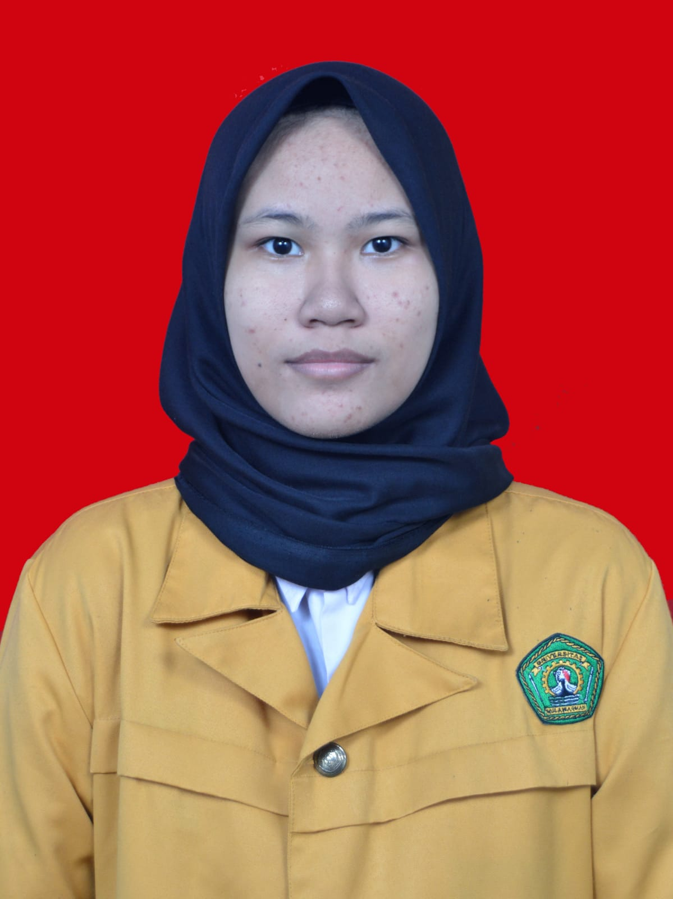
📞 +64 853-9105-2240
✉️ fasya2110@gmail.com
📍 Samarinda, Kalimantan Timur, Indonesia
PENDIDIKAN
(2012-2018)
SD Negeri 015 sungai Pinang
(2018-2021)
SMP Negeri 22 Samarinda
(2021-2024)
SMK Negeri 7 Samarinda
Jurusan TJKT
(2024-Hingga Sekarang)
Universitas Mulawarman
Jurusan Pendidikan Komputer
KEMAMPUAN
- English B1 - Intermediate
- Mampu Bekerja Sama
- Juju Dan Amanah
- Mampu Bekerja Sama
- disiplin waktu
FASYA
AIDIL FITRI
MAHASISWA
PROFIL
Mahasiswa aktif di Universitas Mulawarman jurusan Pendidikan Komputer sejak tahun 2024. Memiliki kemampuan komunikasi dalam Bahasa Inggris pada level intermediate (B1) serta mampu bekerja sama dalam tim dengan baik. Dikenal sebagai pribadi yang jujur, amanah, dan disiplin dalam mengatur waktu. Tertarik pada bidang teknologi, jaringan, dan pengembangan diri melalui berbagai kegiatan akademik maupun organisasi.
PENGALAMAN
- Pernah Magang di DPRD Kota Samarinda
- Pernah Mengikuti Dan Menjadi Peserta Lomba Olimpiade Jaringan Mikrotik
- Salah Satu Peserta Ospek Kampus
- Salah Satu Panitia Acara Kampus
- Salah Satu Panitia HARDIKS
- Mengikuti Seminar Pendidikan
GALLERY / PHOTO
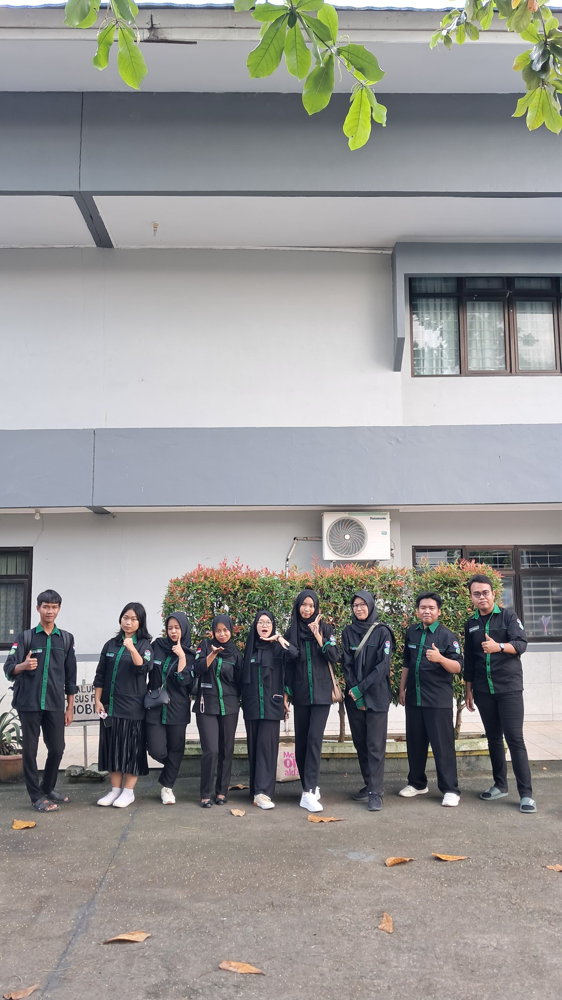
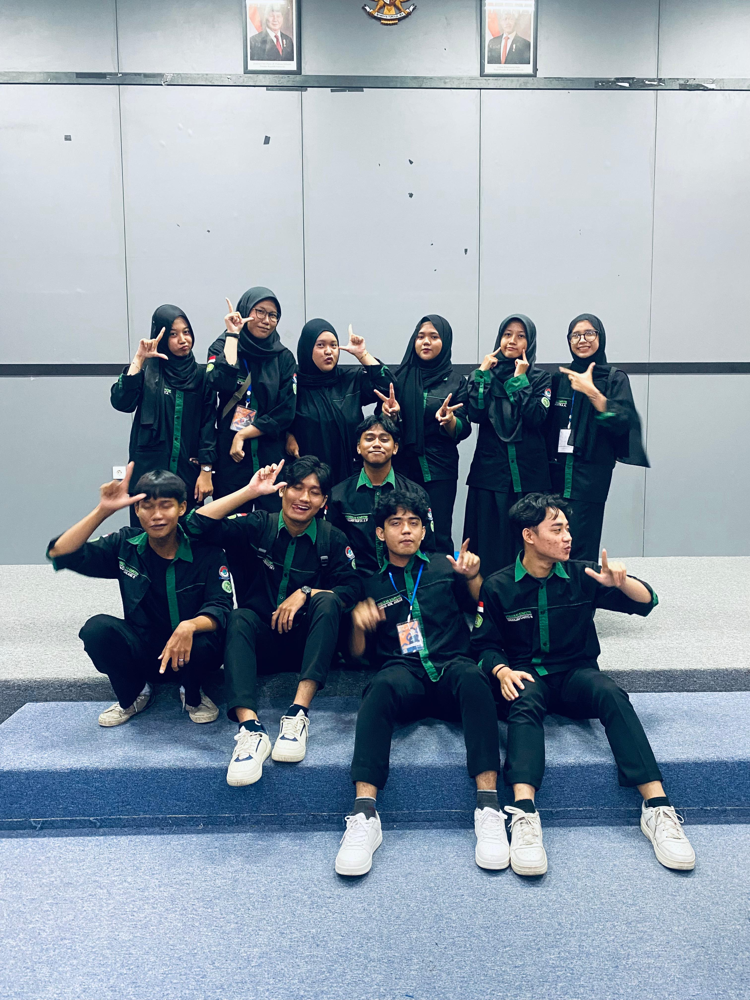
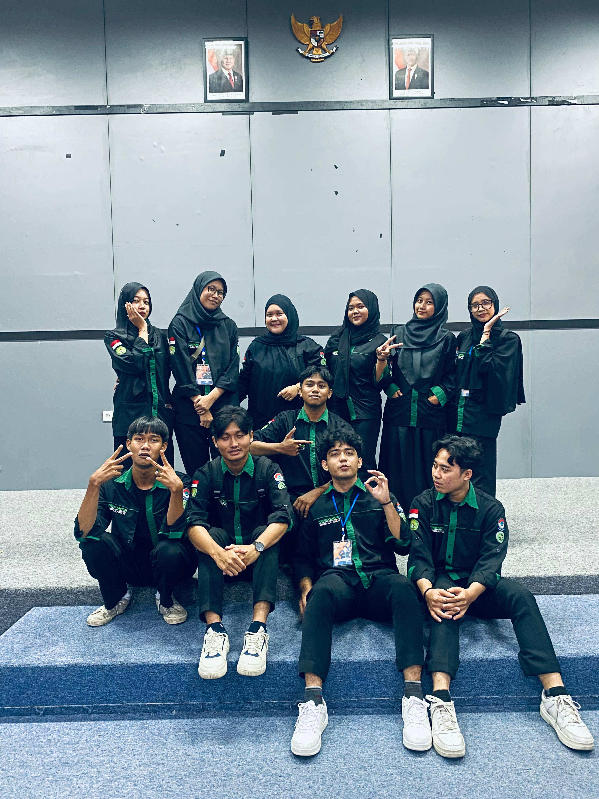
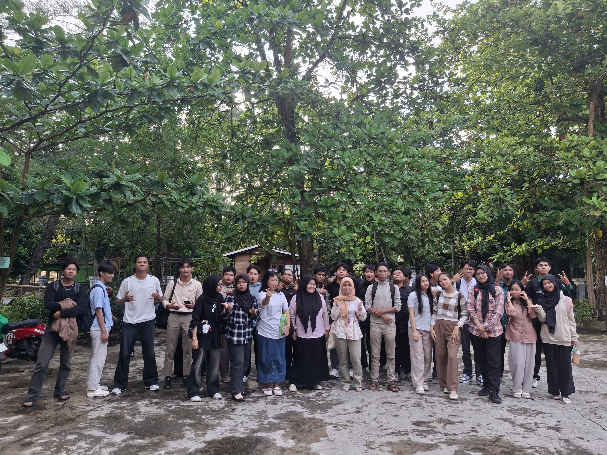
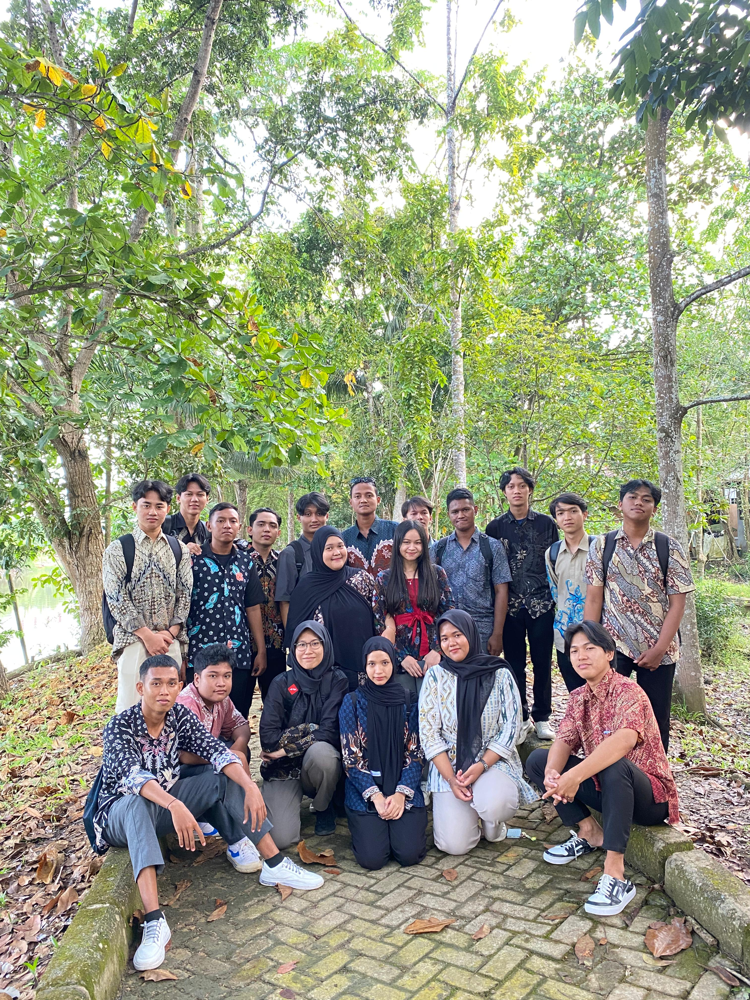
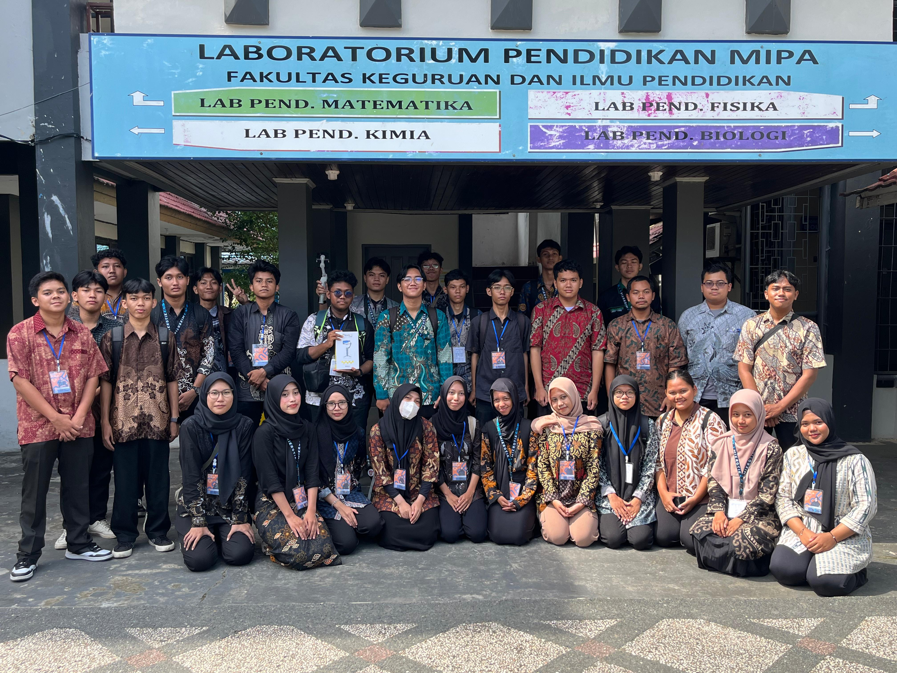
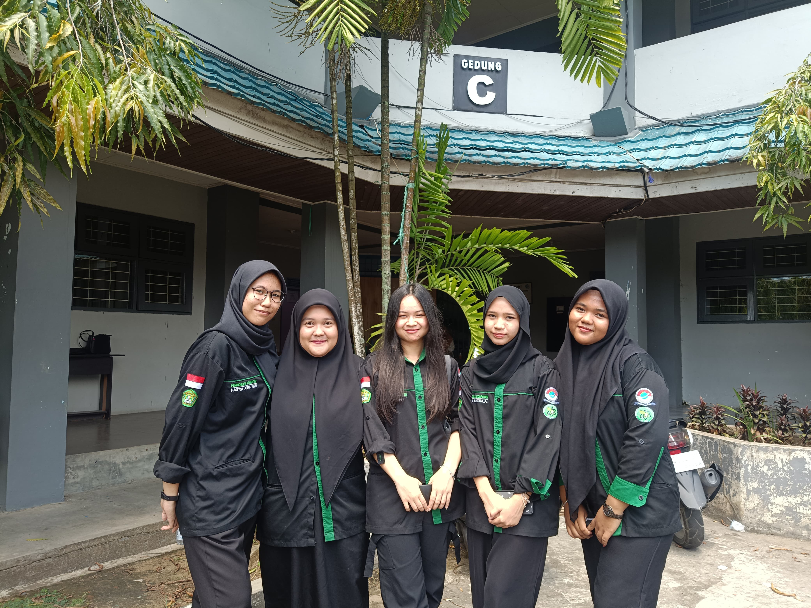
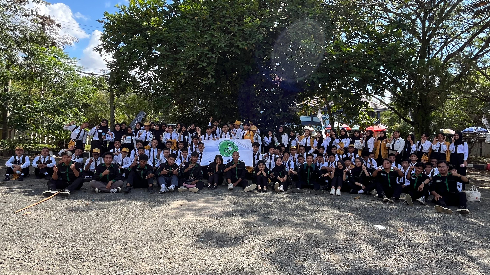
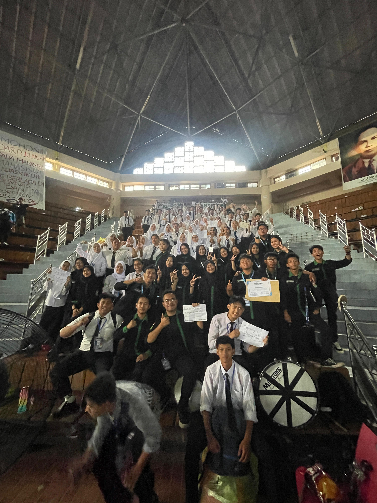
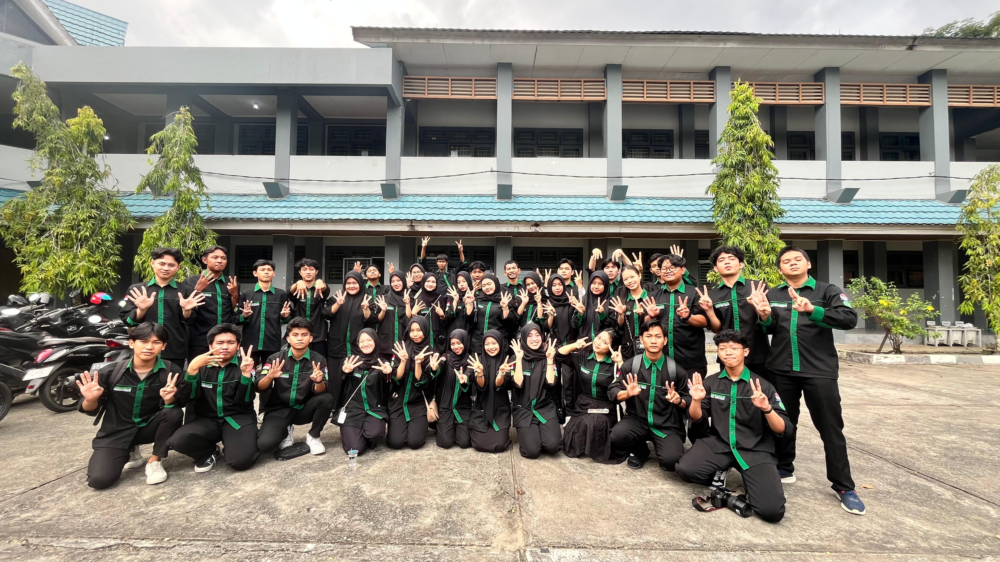
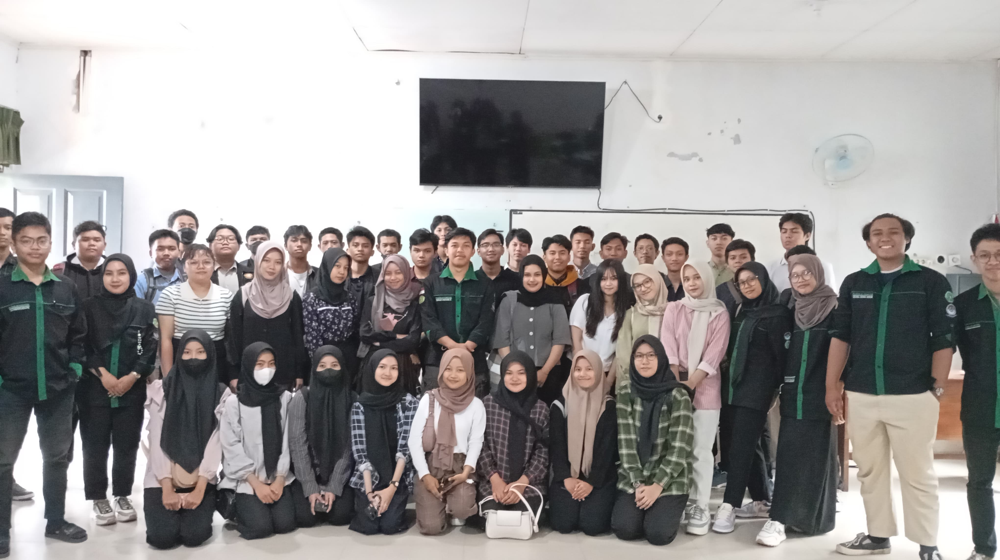
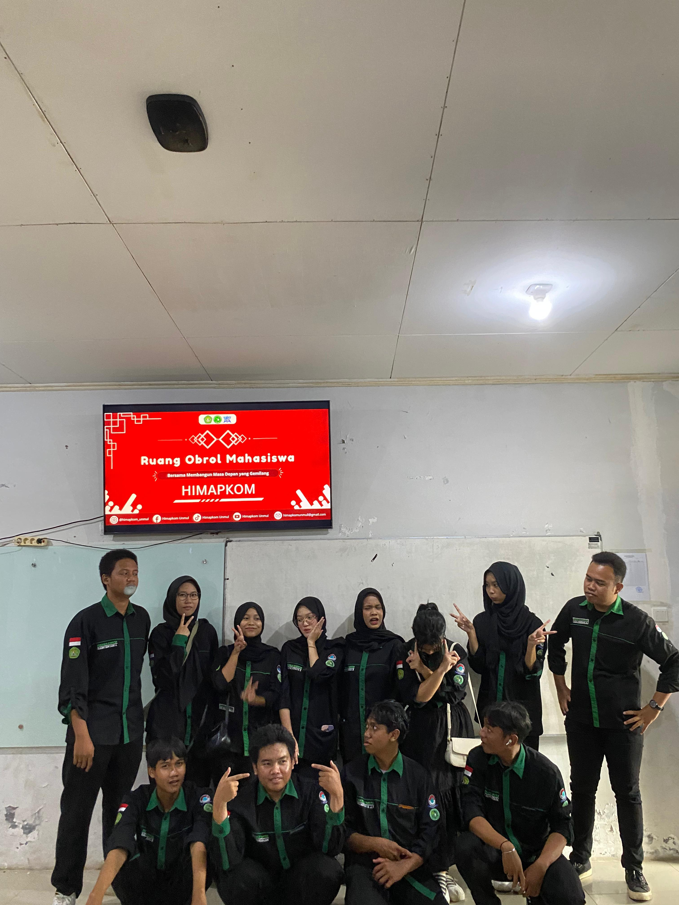
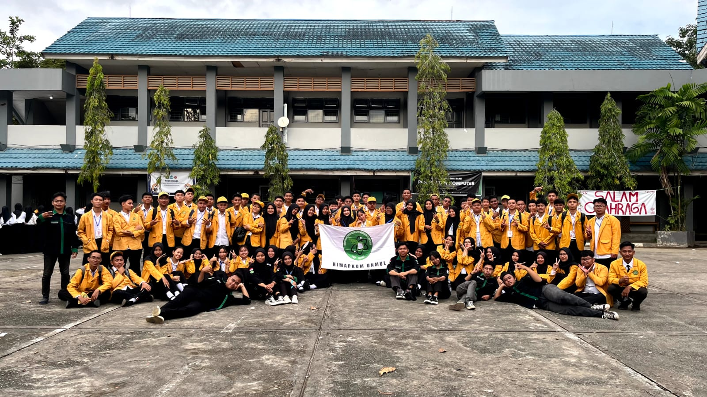